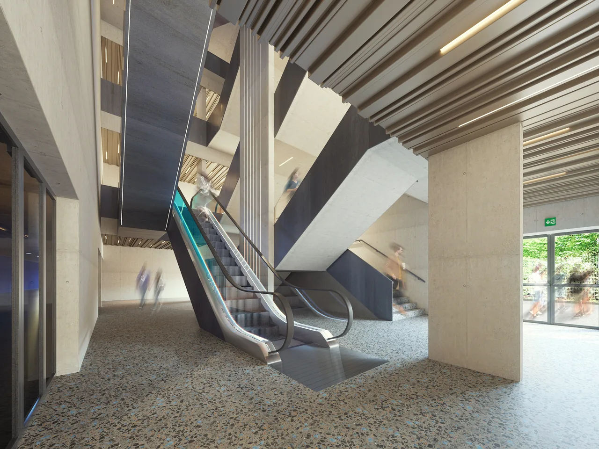
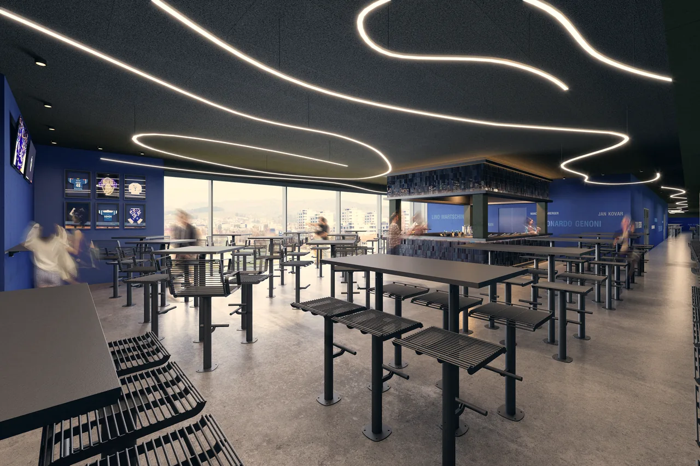
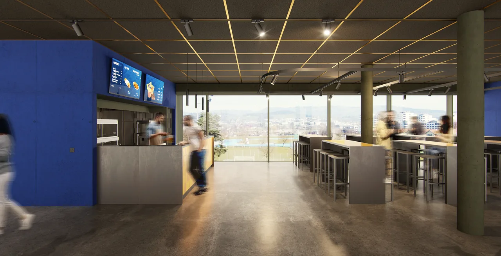

Die Anhebung des Stadiondachs im Sommer 2026 bildete den Schlüsselmoment für die Nord-Erweiterung der OYM hall. Durch den Höhengewinn von rund 4 Metern wurde Raum für eine zusätzliche Tribüne im 3. Obergeschoss geschaffen. Die Vertikalerschliessung erfolgt effizient und komfortabel über Rolltreppen im neu gestalteten Nord-Treppenhaus. Die Kapazität erweitert sich um ca. 1400 begehrte Sitzplätze (+35 %). Zusammen mit den neu geformten Balkonrängen schliesst sich der Raum – die emotionale „Kesselwirkung“ der Arena wird dadurch nochmals intensiviert.
Das Innenleben wurde im Sinne einer modernen Eventstätte neu strukturiert: Das Erdgeschoss erhielt kapazitätsstarke Sanitärzonen, während das 1. Obergeschoss Raum für einen neuen Business Club bietet. Das 2. und 3. Obergeschoss stehen allen Besuchenden offen und verbinden modulare Gastronomiestände mit spektakulären Ausblicken: Durch grosszügige Glasfronten öffnet sich der Blick auf die Leichtathletik- und Fussballanlagen der Stadt Zug. Die Geschäftsstelle des EVZ zieht vom 1. OG hoch hinaus und findet ihren neuen Sitz direkt unter dem Dach im 4. Obergeschoss.
Die charakteristische Streckmetallfassade führt das bewährte Fassadenbild fort. Gleichzeitig setzen zwei grossformatige Hüllöffnungen einen starken städtebaulichen Akzent: Der bisherige „Rücken“ der OYM hall transformiert sich zu einer offenen, einladenden Geste, die den Stadionraum stadtseitig erlebbar macht – ganz im Geist von «keep building».


